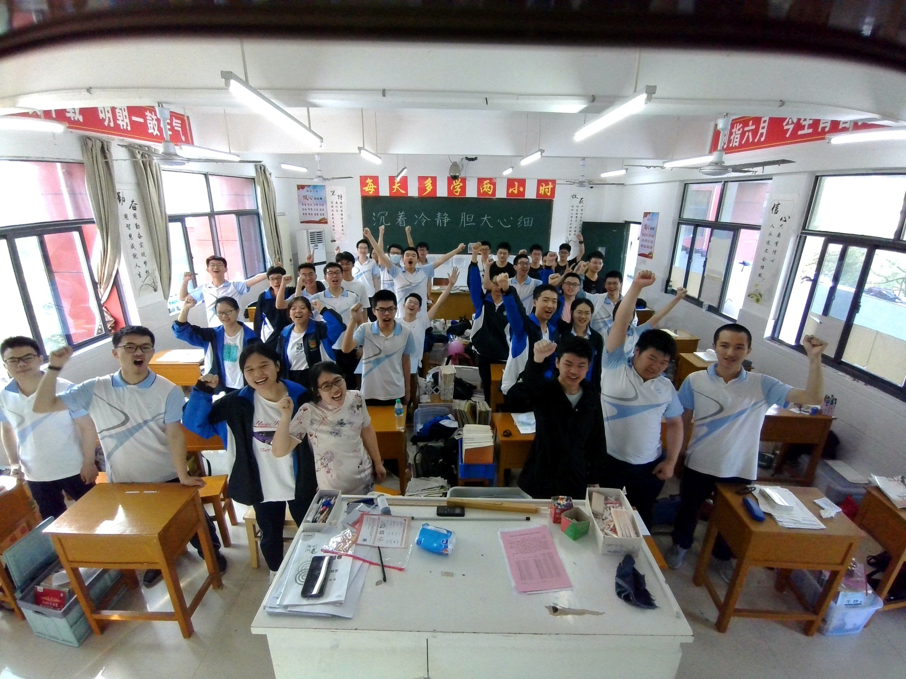

| 未来 | |
| 家乡 | |
| 职业 | |
| 返回首页 | |
| 回首过往，十二年的学习生涯虽然以玩为主，网课期间一度堕落，但我依旧回回味其中的奋斗时光。 不知不觉之间，我已经走过了十几年的风风雨雨，生命成长的意义也在不知不觉的生活中体现出来，或许成长之中一直伴随我的，是奋斗！ 奋斗伴随着我们的长大而成长，他紧跟我们走过的每一步，给我们理想，给我们磨砺，给我们信心。更重要的不是理想和目标能否实现的结果，而是我们努力和奋斗的过程。奋斗需要我们用内心去感悟去聆听。奋斗是必须的，也是我们不可缺少的，真正的奋斗是精彩的，是明艳的。 小时候，奋斗似乎是个很渺茫的词。虽然身边总是环绕着奋斗，但真正要理解奋斗的含义，似乎却又无从说起。要想把奋斗付诸于实践之中，更是又显得离我们那样遥远，只是在脑海中不知不觉印下了奋斗的影像，但还是仅仅的一个模糊的剪影，没有更深刻的含义。后来，或许年龄的增长使得我和奋斗的关系拉近了许多，过去遥不可及的奋斗，似乎已不再那么遥远。但却没有切实的深入我们的生活，奋斗虽然不算触手可及，但已经或有或无的接近了我们，体现在了方方面面。奋斗的意义似乎更加明了，只是还有一层隔膜横在了我们之间。 高考时我有了更加明确的奋斗目标，为此更加努力，如今考上了理想的大学——华中科技大学。 纵使前路有艰难险阻，也要不畏艰难，终会云销雨霁，彩彻区明。 |
|